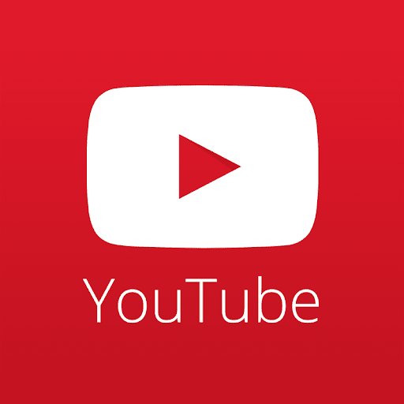

SERVICIOS >
NOSOTROS >
PORTAFOLIO >
APRENDER DISEÑO WEB >
VIDEOS >
CONTACTO >
| LOGO | ETIQUETA | DESCRIPCIÓN |
|---|---|---|
 | Creas un enlace a su perfil. También se puede agregar a la biografía de esa persona la publicación. | Mark Zuckerberg creó Facebook durante el periodo en que fue estudiante. |
 | La etiqueta aparece en la página de perfil de la cuenta de Twitter pertinente y en los Tweets enviados y compartidos desde estas cuentas | El primer prototipo fue usado internamente entre los empleados de Odeo. |
 | Su método consiste en el uso de etiquetas para facilitarte la clasificación y búsqueda de emails en todo momento. | Gmail fue un proyecto iniciado por desarrolladores de Google por Paul Buchheit. |
 | Las etiquetas y las carpetas no son lo mismo. Si eliminas un mensaje, se borrará de todas las etiquetas que tenga asignadas y de tu bandeja de entrada. | En 1860 Antonio Meucci hizo público su invento, el teletrófono. En una demostración pública. |
| Conoce cuáles son los hashtags más populares de TikTok y aprende a utilizarlos en tus publicaciones para conectar con tu audiencia. | TikTok, conocido en China como Douyin,es un servicio de redes sociales. | |
|  | Las etiquetas de YouTube son palabras y frases que describen tu video y ayudan a la gente a encontrar tu contenido. | Fue creado por tres antiguos empleados de PayPal en febrero de 20003 . |
SERVICIOS >
NOSOTROS >
PORTAFOLIO >
APRENDER DISEÑO WEB >
VIDEOS >
CONTACTO >